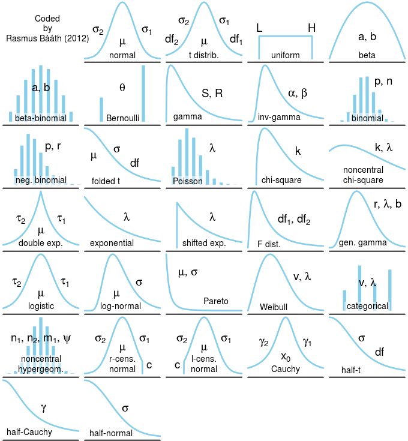

Day 5 Linear mixed models
September 9th
5.1 Announcements
- HW 2 is up and due next Wednesday
- In-class review
5.2 Statistical modeling
- Statistical models combine deterministic (see step 1 below) and stochastic (see step 2 below) components
5.2.1 Three steps to modeling data
- Define the linear predictor \(\boldsymbol\eta = \mathbf{X}\boldsymbol{\beta} + \mathbf{Z}\mathbf{u}\),
- Define the probability distribution for the data, \(\mathbf{y}|\mathbf{u}\),
- Define the link function \(g(\cdot)\), \(\boldsymbol\eta = g(\mathbf{y}|\mathbf{u})\).

Figure 5.1: Common variable distributions. Page 60 in Stroup et al. (2024)

Figure 5.2: Common variable distributions.
5.3 Estimation of variance components
For any unknown parameter, there are multiple ways to estimate it. We call those the methods of estimation.
5.3.1 Maximum Likelihood Estimation (MLE)
Maximum Likelihood Estimation of variance components provides downward biased estimates for small data (most experimental data). \(\ell_{ML}(\boldsymbol{\sigma; \boldsymbol{\beta}, \mathbf{y}}) = - (\frac{n}{2}) \log(2\pi)-(\frac{1}{2}) \log ( \vert \mathbf{V}(\boldsymbol\sigma) \vert ) - (\frac{1}{2}) (\mathbf{y}-\mathbf{X}\boldsymbol{\beta})^T[\mathbf{V}(\boldsymbol\sigma)]^{-1}(\mathbf{y}-\mathbf{X}\boldsymbol{\beta})\)
5.3.2 Restricted Maximum Likelihood (REML)
Restricted Maximum Likelihood (REML) avoids MLE’s downward bias under small data and is thus is the default in most mixed effects models.
- In REML, the likelihood is maximized after accounting for the model’s fixed effects.
- In REML, \(\ell_{REML}(\boldsymbol{\sigma};\mathbf{y}) = - (\frac{n-p}{2}) \log (2\pi) - (\frac{1}{2}) \log ( \vert \mathbf{V}(\boldsymbol\sigma) \vert ) - (\frac{1}{2})log \left( \vert \mathbf{X}^T[\mathbf{V}(\boldsymbol\sigma)]^{-1}\mathbf{X} \vert \right) - (\frac{1}{2})\mathbf{r}[\mathbf{V}(\boldsymbol\sigma)]^{-1}\mathbf{r}\),
where \(p = rank(\mathbf{X})\), \(\mathbf{r} = \mathbf{y}-\mathbf{X}\hat{\boldsymbol{\beta}}_{ML}\).
- Start with initial values for \(\boldsymbol{\sigma}\), \(\tilde{\boldsymbol{\sigma}}\).
- Compute \(\mathbf{G}(\tilde{\boldsymbol{\sigma}})\) and \(\mathbf{R}(\tilde{\boldsymbol{\sigma}})\).
- Obtain \(\boldsymbol{\beta}\) and \(\mathbf{b}\).
- Update \(\tilde{\boldsymbol{\sigma}}\).
- Repeat until convergence.
- Start with initial values for \(\boldsymbol{\sigma}\), \(\tilde{\boldsymbol{\sigma}}\).
- Variance components may be \(<0\); in that case they are set to zero.
5.3.3 Method of moments (MoM)
Method of moments (MoM) is derived from ANOVA tables that include the expected mean squares.
Use actual sums of squares and expected mean squares (EMS) from ANOVA to clear for the different variance components.
e.g., \(\tilde{\sigma}^2_{w} = \frac{SSw - SS_e}{c}\) (See table above). However, if \(\tilde{\sigma}^2_{w} < 0\), \(\hat{\sigma}^2_{w} = 0\).
Issues with variance estimates equal to zero
- Type I error inflation
- Frey et al. (2024)
5.4 Information pooling and shrinkage
In mixed models, pooling refers to how much information is shared across different groups (or clusters) in the data when estimating parameters.
The three pooling approaches represent different assumptions about the variance between these groups (\(\sigma^2_{b}\)).
To illustrate this concept, consider a scenario where we have yield observations \(y_{ij}\) for the \(i\)th observation of location \(j\). Then, \(i = 1, \dots, n_j\) and \(j = 1, \dots, J\). We want to estimate a mean for each location \(L_j\).
5.4.1 Complete pooling
- All groups (i.e., locations) are similar and there is no meaningful variation between them.
- The group (i.e., location) identifier \(j\) contains no useful information.
- \(y_{ij} \sim N(\mu, \sigma^2)\)
- The between-group (i.e., location) variance is assumed to be exactly zero (\(\sigma^2_{L} = 0\)) and thus, if \(L_j \sim N(0, 0)\), all \(L_j =0\). Thus, all locations have the same mean \(\mu\).
5.4.2 No pooling (all-fixed model)
- Each group is completely independent and unique (i.e., knowing something about Location 1 tells you absolutely nothing about Location 2).
- Equivalent to fitting a classical linear model with only fixed effects.
- \(y_{ij} \sim N(\mu + L_j, \sigma^2)\)
- The between-group (i.e., location) variance is assumed to be infinite (\(\sigma^2_{L} \to \infty\)) and thus, \(L_j\) is the BLUE for that group.
- Think about this for an IBD!
5.4.3 Partial pooling (mixed-effects model)
Groups are different, but they are all drawn from a common overarching population distribution.
Information is shared across groups to improve the estimates for each individual group.
\(y_{ij} \vert L_j \sim N(\mu + L_j, \sigma^2)\), where \(L_j \sim N(0, \sigma^2_L)\), or…
\(y_{ij} \sim N(\mu + L_j, \sigma^2_L+\sigma^2)\).
The between-group (i.e., location) variance is estimated from the data (see methods of estimation).
Shrinkage: The estimate for group \(j\) is a weighted average of the unpooled group mean (\(\bar{y}_j\)) and the completely pooled grand mean (\(\mu\)). \[L_j \approx \frac{\frac{n_j}{\sigma^2}\bar{y}_j + \frac{1}{\sigma_{L}^2}\mu}{\frac{n_j}{\sigma^2} + \frac{1}{\sigma_{L}^2}}\]
Think about this for an IBD!
More on shrinkage:
- If Loc has a lot of data (\(n_j \to \infty\)): first term dominates, and the partial pooling estimate approaches the no pooling estimate (\(\bar{y}_j\)). The model trusts the abundant local data.
- If a group has very little data (\(n_j \to 0\)), the second term dominates, and the estimate shrinks toward the complete pooling estimate (\(\mu\)). The model borrows strength from the rest of the population to stabilize a noisy, low-information group.
5.5 Degrees of freedom
Mixed models do not trace to the classical concept of degrees of freedom. In hierarchical models, rigidly counting parameters for degrees of freedom is conceptually problematic.
The independent pieces of information shift depending on group sizes and variance: a group-level coefficient modeled as a random effect does not consume exactly \(1\) degree of freedom (as an unpooled fixed effect would), nor does it consume \(0\) (as a completely pooled grand mean would). Instead, the effective degrees of freedom consumed by a set of random effects lies somewhere between \(1\) and \(J\) (where \(J\) is the total number of groups).
The effective degrees of freedom depend on the magnitude of between-group versus within-group variance: if group variation is high, degrees of freedom approach the number of groups; if low, they approach the total sample size.
- Contrasts for balanced & complete designs have straightforward calculation of degrees of freedom.
- For unbalanced designs, incomplete blocks, missing data, and cases with more complex variance-covariance structure, the ANOVA shell does not give us exact degrees of freedom.
- Downward bias of the variance of an estimable function, leading to:
- too narrow confidence intervals
- inflated type I error rates
- Bias adjustment methods estimate the approximate degrees of freedom, which might be a non-integer number.
Satterthwaite approximation
Let \(\frac{X^2_{num}/\nu_1}{X_2^\star/\nu^\star_2}\) be the ratio of interest, where \(X_{num}^2 \sim \chi^2_{\nu_1}\) and \(X_2^\star\) is a linear combination of chi-square random variables all independent of \(X_{num}^2\), then \(X_2^\star \sim\) approximately \(\chi^2_{\nu^\star_2}\), where
\[\nu_2^\star \equiv \frac{(\sum_m c_m X_m^2)^2}{\sum_m\frac{(c_m X_m^2)}{df_m}}.\]
Kenward-Roger approximation
- Paper
- Based on REML
- Focused on \((\mathbf{X}^T\mathbf{V}^{-1} \mathbf{X})^{-1}\) (the variance of \(\hat{\boldsymbol\beta}\))
- Again, expept for variance-component-only LMMs with balanced data and their compound symmetry marginal model equivalents, the estimated covariance of \(\beta \mathbf{K}\) will tend to be underestimated.
- KR somewhat more conservative and reliable than Satterthwaite (source).
- Integrated in most statistical software.